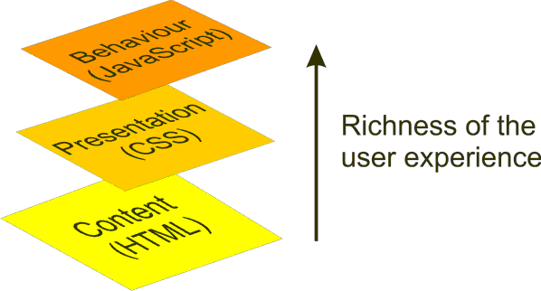

Greasemonkey
Homa Amini
21-05-2013
Agenda
- Greasemonkey and its history
- What You Need to start
- Getting More Advanced Javascript example
- Greasemonkey and getting accommodation
What is Greasemonkey
- The Greasemonkey project began 28 November 2004
- Greasemonkey is a Mozilla Firefox extension
- Can be used for customizing page appearance, adding new functions to web page, fixing rendering bugs, combining data from multiple web pages...
What You Need
- Firefox web browser
- Greasemonkey extension for Firefox
- Intermediate knowledge of JavaScript
Compatibility
- Equivalents for other browsers
- Versions 8 and upwards of Opera
- For Internet Explorer, similar functionality is offered by IE7Pro
- As of February 2010, Chrome has limited "native support" for Greasemonkey scripts
- On Safari for Mac,there is a SIMBL-managed plug-in called GreaseKit.
Different layers
The three layers of a web document